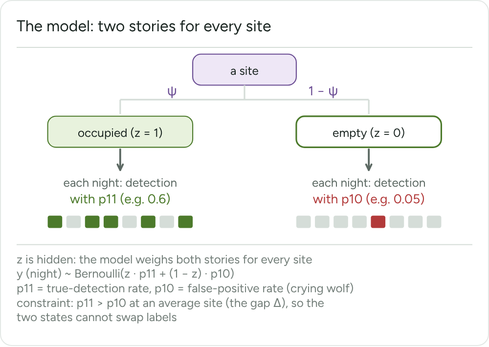
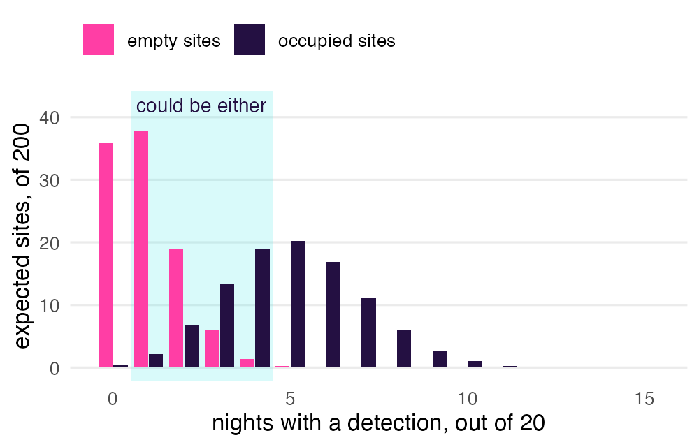
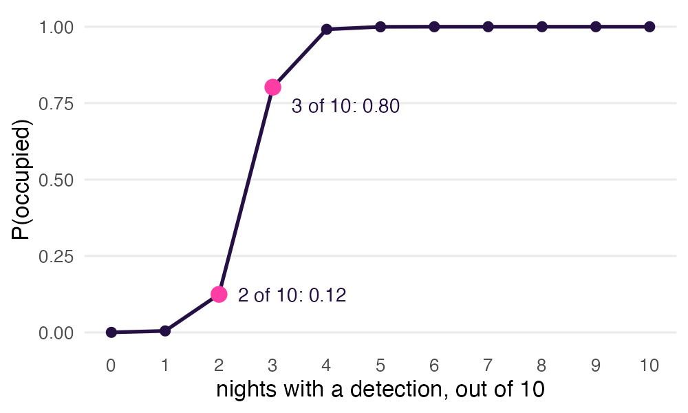
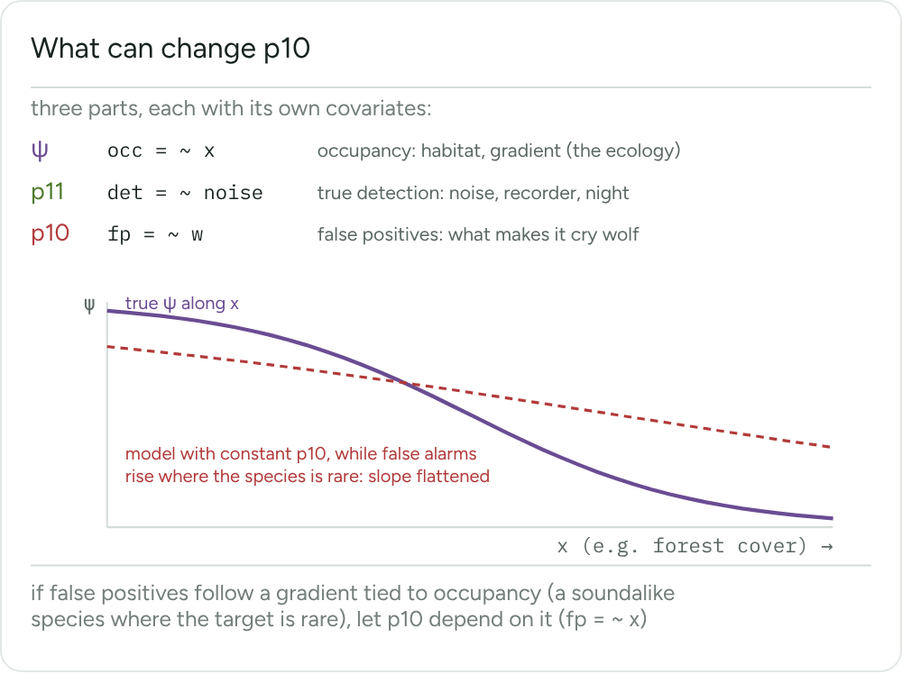

A classifier misses calls, and it also cries wolf. Counting a site as occupied after one detection inflates occupancy. crywolf lets detections be false and gives each site a probability of being occupied.
Two stories for every site

symbol
meaning
formula
ψ
a site is occupied
occ = ~ x
p11
detection at an occupied site
det = ~ x
p10
detection at an empty site
fp = ~ x
The gap Δ keeps p11 above p10 at an average site, so the two states cannot swap labels.
How the model tells them apart

Repeated occasions separate occupied from empty sites. Where the groups overlap, the data alone cannot say how many detections are false. Known truth settles that.
P(occupied) of one site

With n₁ occasions with a detection and n₀ without:
Occupied
ψ × p11^n₁ × (1 − p11)^n₀
Empty
(1 − ψ) × p10^n₁ × (1 − p10)^n₀
P(occupied)
Occupied ÷ (Occupied + Empty)
fp_sites() repeats this for every posterior draw. A verified or confirmed true detection gives P(occupied) = 1.
It needs some known truth
Without it, p10 rests only on the priors and the gap, and fp_occu() warns about it.
multiple methods
observation confirmation
observes
a second method, on occasions of its own
flags on random flagged occasions
recovers best
p11
p10
anchors
ψ, the state
the error rate at the threshold
blind to
false alarms at occupied sites
where the classifier never fires
new threshold
nothing to redo
redo the checks
cost
high
low
fp_data()
verified =
confirmed =
Draw the checked occasions at random, at the threshold of the analysis. Clips picked for high scores understate p10.
The same verdict in verified and in the confirmed rows counts twice, and fp_data() warns about it.
From detections to a fit
crywolf cheat sheet provetelab.org/crywolf
Choose a route
Read the data
# BirdNET selection tables and reviewed clips
detections <- fp_read_birdnet("tables")
verdicts <- fp_read_validation("verdicts.csv")
# or an export of sheepdog
x <- fp_read_sheepdog("occupancy_export",
species = "compau")
fp_read_sheepdog() drops clips drawn with sampling_mode = "top", with a warning.
Build the occasions
auto <- fp_aggregate(occasions, detections,
threshold = 0.5, validation = verdicts)
occasions lists every recording, including those without detections. For a sheepdog export, use by = c("site", "occasion_id").
Assemble the data
# multiple methods
d <- fp_data(auto, sites, verified,
recorder = "recorder")
# observation confirmation
d <- fp_data(auto, sites,
confirmed = c("n_true", "n_false"))
# detection matrices instead of long tables
d <- fp_data_wide(y_auto, y_verified, site_covs)
auto has one row per occasion and sites one row per site. Add season for the dynamic model and species for several species.
fp_gap_prior() turns reviewed counts into a prior for the gap. Rough values of p11 and ψ come from a pilot fit or earlier work.
Fit
m <- fp_occu(d, occ = ~ x, det = ~ 1, fp = ~ w,
seed = 1)
argument
adds
ver = ~ listener
covariates of the verified method
random_recorder
an intercept per recorder
random_fp, random_det
a site effect on each rate
markov = "time"
runs of true detections
priors =
a call to fp_priors()
What can change p10

When false positives follow a gradient tied to occupancy, a constant p10 flattens the occupancy slope. Let fp depend on that gradient.
Check, report and extend
crywolf cheat sheet provetelab.org/crywolf
Check the fit first
summary(m)
plot(m, type = "trace")
plot(m, type = "rank")
ppc <- fp_ppc(m, seed = 1)
plot(ppc)
Do not read the estimates before looking at R-hat, the effective sample sizes, the divergences and the posterior predictive check. Use fp_ppc(m, method = "verified") for the verified occasions.
Read the results
coef(m, "occ")
summary(m, prob = 0.9)
as_draws_df(m)
plot(m)
plot(fp_effects(m, "x", process = "fp"))
predict(m, newdata, process = "occ")
st <- fp_sites(m, seed = 1)
plot(st)
fp_sites() gives P(occupied) and the false-positive rate of each site.
Terms
site
the unit whose occupancy is estimated
occasion
one survey of a site: a recording, a minute or a night
y
1 if the detector flagged the species on an occasion
z
the hidden state of a site: 1 occupied, 0 empty
threshold
the score from which a prediction counts as a detection
A lower threshold lets in more true and more false detections, and p10 is estimated at that threshold.
Carry the calibration into occupancy
x <- fp_read_sheepdog("occupancy_export",
species = "nyc_alb")
versions <- fp_draws_data(x, n_draws = 20, seed = 1)
mc <- fp_occu_mc(versions, occ = ~ 1, fp = NULL)
summary(mc)
Each version of the detections gets one fit, and the posteriors are pooled. sd_within is the spread within a fit and sd_between the spread between fits. The occupancy model does not update the calibration (a cut model).
fp = NULL fits no false-positive process. To estimate p10 on this route, keep fp and give annotated recordings (verified).
What to report
model
the design, what an occasion is and how the checked occasions were chosen